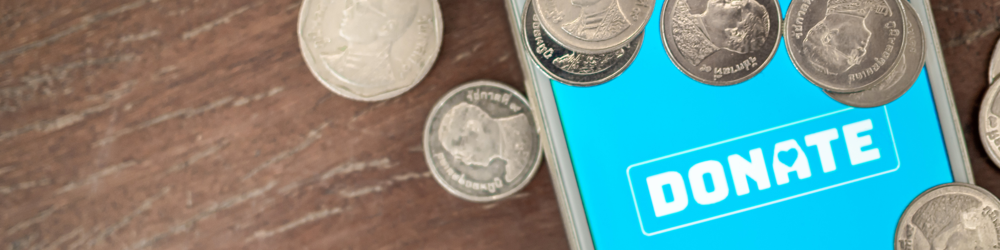

Join us in making a difference in your community!


Time Volunteer
By volunteering your time, you can assist in sorting and packing food donations, participate in community outreach efforts, or even organize food drives in your local area.
Raise Awareness
Share our initiatives on social media, engage your friends and family in conversations about food insecurity, and encourage them to get involved. Use the hashtag #FoodLinkAction to amplify our message and raise awareness.